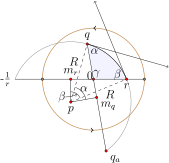

Rather than derive the arc-length formula here as we did for hyperbolic geometry, we state the following definition and note the single sign difference from the hyperbolic case. This sign difference is consistent with the sign difference in the algebraic descriptions of the transformations in the respective geometries.
Definition6.3.1
If \(\boldsymbol{r}: [a,b] \to \mathbb{P}^2\) is a smooth curve in \((\mathbb{P}^2,{\cal S})\text{,}\) the length of \(\boldsymbol{r}\), denoted \({\cal L}(\boldsymbol{r})\text{,}\) is given by
The proof of this theorem is left as an exercise, and is essentially the same as the proof that hyperbolic arc-length is an invariant of hyperbolic geometry, from which it follows that area is invariant. One can also prove that the shortest path between two points is along the elliptic line between them. That is, geodesics follows elliptic lines.
However, one must be careful when measuring the shortest path between points in the projective plane. If \(p\) and \(q\) are two points in \(\mathbb{P}^2\) then there is exactly one elliptic line through them both, but we may view this line as consisting of two elliptic segments, both of which connect \(p\) to \(q\text{.}\) That is, if a bug finds herself at point \(p\) and wants to walk along an elliptic line to point \(q\text{,}\) she can do so by proceeding in either direction along the line, as shown in Figure 6.3.3. The elliptic distance between \(p\) and \(q\), which we denote by \(d_S(p,q)\text{,}\) is then the minimum value of the two segment lengths.
Figure6.3.3 There is a single elliptic line joining points \(p\) and \(q\text{,}\) but two elliptic line segments. The distance from \(p\) to \(q\) is the shorter of these two segments.
Theorem6.3.4
The distance between two points \(p\) and \(q\) in \((\mathbb{P}^2,{\cal S})\) is
We first determine the elliptic distance between the origin and a point \(x\) (with \(0 \lt x \leq 1\)) on the positive real axis.
The elliptic line through 0 and \(x\) lives on the real axis, and we may parameterize the “eastbound” segment connecting 0 to \(x\) by \(\boldsymbol{r}(t) = t\) for \(0 \leq t \leq x\text{.}\) (The “westbound” segment from 0 to \(x\) is clearly not shorter than the eastbound segment.) The length of this segment is
Thus, \(d_S(0,x)=2\arctan(x)\text{,}\) for \(0 \lt x \leq 1\text{.}\)
To determine the distance \(d_S(p,q)\) between arbitrary points in \(\mathbb{P}^2\text{,}\) we may first apply a transformation in \(\cal{S}\) that sends \(p\) to the origin, and \(q\) to a point on the positive real axis. By an appropriate choice of \(\theta\text{,}\) the transformation
will do the trick. Now, \(T\) is a Möbius transformation of the entire extended plane, and it may take \(q\) outside the unit disk, in which case \(q_a\) will be mapped to a point on the real axis inside the unit disk. So, either \(|T(q)|\) or \(|T(q_a)|\) will be a real number between 0 and 1. If we call this number \(x\text{,}\) then \(d_S(p,q)=d_S(0,x)\text{,}\) since transformations in \(\cal{S}\) preserve distance between points.
With the sphere as our model, we can check our formulas against measurements on the sphere. For instance, \(d_S(0,1)=2\arctan(1)=\pi/2\text{.}\) The elliptic segment from 0 to 1 corresponds via stereographic projection to one-quarter of a great circle on the unit sphere. Any great circle on the unit sphere has circumference \(2\pi\text{,}\) so one-quarter of a great circle has length \(\pi/2\) on the sphere. We also note that the distance formula \(d_S(0,x) = 2\arctan(x)\) applies to spherical geometry \((\mathbb{C}^+,{\cal S})\) for all positive real numbers \(x\text{,}\) and this distance matches the corresponding distances of the points on the unit 2-sphere, see Exercise 6.3.12.
We emphasize that \(\pi/2\) is an upper bound for the distance between two points in \((\mathbb{P}^2,{\cal S})\text{.}\) However, there is no upper bound on how long a journey along an elliptic line can be. If Bormit the bug wants to head out from point \(p\) and travel \(r\) units along any line, Bormit can do it, without obstruction, for any \(r \gt 0\text{.}\) Of course, if \(r\) is large enough, Bormit will do “laps” on this journey. We say a path is a geodesic path if it follows along an elliptic line.
Definition6.3.5
In \((\mathbb{P}^2,{\cal S})\text{,}\) the elliptic circle centered at \(z_0\) with radius \(r\) consists of all points \(z \in \mathbb{P}^2\) such that there exists a geodesic path of length \(r\) from \(z_0\) to \(z\text{.}\)
Each transformation \(T\) in \(\cal{S}\) is an elliptic Möbius transformation by Theorem 6.2.4 that fixes two antipodal points, say \(p\) and \(p_a\text{.}\) So \(T\) pushes points along type II clines of \(p\) and \(p_a\text{,}\) and since transformations preserve distance between points, these type II clines of \(p\) and \(p_a\) determine elliptic circles; all points on these type II clines are equidistant from \(p\text{.}\)
Now, suppose \(p\) and \(q\) are any distinct points in \(\mathbb{P}^2\text{.}\) There exists a type II cline of \(p\) and \(p_a\) that goes through \(q\text{.}\) If this cline lives entirely inside the closed unit disk it represents the elliptic circle centered at \(p\) through \(q\text{.}\) Of course, this cline may not live entirely inside the disk, as is the case in Figure 6.3.6. But each point on the type II cline of \(p\) and \(p_a\) through \(q\) has antipodal point on the type II cline of \(p\) and \(p_a\) through \(q_a\text{.}\) So, in \(\mathbb{P}^2\) we may represent the elliptic circle centered at \(p\) through \(q\) by the portions of these two type II clines of \(p\) and \(p_a\) that live in the closed unit disk.
Figure6.3.6 The elliptic circle centered at \(p\) through \(q\) in \(\mathbb{P}^2\) may consist of portions of two distinct clines.
We note also that elliptic circles centered at the origin correpond to Euclidean circles centered at the origin. In particular, a Euclidean circle centered at the origin with Euclidean radius \(a\) (with \(0 \lt a \lt 1\)) corresponds to an elliptic circle centered at the origin with elliptic radius \(2\arctan(a)\text{.}\)
Theorem6.3.7
An elliptic circle in \(\mathbb{P}^2\) with elliptic radius \(r \lt \pi/2\) has circumference \(C = 2\pi\sin(r)\text{.}\)
The proof of this theorem is left as an exercise. Circles with elliptic radius greater than or equal to \(\pi/2\) are also investigated in the exercises. They may not look like circles!
The area of a triangle
We now turn our attention to finding a formula for the area of a triangle in elliptic geometry. We begin with lunes. A lune is the region in \(\mathbb{P}^2\) bounded between two elliptic lines. How do two elliptic lines bound a region? Two lines trap a region because we are identifying antipodal points on the unit circle. A bug living in the shaded region of \(\mathbb{P}^2\) pictured in Figure 6.3.8 would be able to visit all shaded points without crossing the boundary walls determined by the two elliptic lines. The shaded region is a single, connected region bounded by two lines. So what is the area of this region?
Figure6.3.8 A lune in \(\mathbb{P}^2\) with angle \(\alpha\text{.}\)
Lemma6.3.9The area of a lune
In \((\mathbb{P}^2,{\cal S})\text{,}\) the area of a lune with angle \(\alpha\) is \(2\alpha\text{.}\)
To compute the area of a lune, first move the vertex of the lune to the origin in such a way that one leg of the lune lies on the real axis, as in Figure 6.3.10. Then half of the lunar region can be described in polar coordinates by \(0 \leq r
\leq 1\) and \(0 \leq \theta \leq \alpha\text{.}\)
Figure6.3.10 A lune whose elliptic lines intersect at the origin.
So the area of a lune having angle \(\alpha\) is given by
Example6.3.11Triangle area in \((\mathbb{P}^2,{\cal S})\)
Triangle \(\Delta pqr\) below is formed from 3 elliptic lines. Notice that each corner of the triangle determines a lune, and that the three lunes cover the entire projective plane, with some overlap. In particular, the three lunes in sum cover the triangle three times, so the sum of the three lune areas equals the area of the entire projective plane plus two times the area of the triangle.
The area of the entire projective plane is \(2\pi\) (see Exercise 6.3.9), so we have the following relation:
We summarize the result of this example with the following theorem.
Theorem6.3.12
In elliptic geometry \((\mathbb{P}^2,{\cal S})\text{,}\) the area of a triangle with angles \(\alpha,
\beta, \gamma\) is
\begin{equation*}
A = (\alpha+\beta+\gamma) - \pi.
\end{equation*}
From this theorem it follows that the angles of any triangle in elliptic geometry sum to more than 180\(^\circ\text{.}\)
We close this section with a discussion of trigonometry in elliptic geometry. We derive formulas analogous to those in Theorem 5.4.12 for hyperbolic triangles. We assume here that the triangle determined by distinct points \(p, q\) and \(z\) in \((\mathbb{P}^2,{\cal S})\) is formed by considering the shortest paths connecting these three points. So triangle side lenghths will not exceed \(\pi/2\) in what follows.
Figure6.3.13 An elliptic triangle with side lengths and angles marked.
Theorem6.3.14
Suppose we have an elliptic triangle with elliptic side lengths \(a,b,\) and \(c\text{,}\) and angles \(\alpha, \beta,\) and \(\gamma\) as in Figure 6.3.13. Then the following laws hold:
a. Position our triangle conveniently, with one corner at the origin, one on the positive real axis at the point \(r\) (\(0
\lt r \leq 1)\text{,}\) and one at the point \(q = ke^{i\gamma}\) (with \(0 \lt k \leq
1)\) as in Figure 6.3.13. Then \(a =
d_S(0,r)=2\arctan(r)\text{,}\) so that
by the cosine double angle formula. If we set \(\theta = \arctan(r)\) we may use the following right triangle to rewrite the above description of \(\cos(a)\) as follows:
Turning our attention to the side with length \(b\text{,}\) \(b = d_S(0,q) = 2\arctan(|q|)=2\arctan(k),\) since \(q = ke^{i\gamma}\) with \(k > 0\text{.}\) It follows that
Though we worked out the formula for a conveniently located triangle, it holds for any triangle in elliptic geometry because angles and distances are preserved by transformations in elliptic geometry, and there is a transformation that takes any triangle to this convenient location.
b. To prove the elliptic law of sines, first construct the circle containing side \(c\text{.}\) This circle goes through \(r\) and \(q\) and their antipodal points \(-1/r\) and \(q_a\) as pictured in Figure 6.3.15. We let \(p\) denote the center of the circle, and \(R\) its Euclidean radius.

Figure6.3.15 Deriving the elliptic law of sines.
Let \(m_r\) be the midpoint of the segment connecting \(r\) and \(-1/r\text{,}\) and let \(m_q\) be the midpoint of the segment connecting \(q\) and \(q_a\text{.}\) So,
Note further that \(\Delta pm_rr\) is right, and \(\angle m_r r p =
\pi/2 - \beta\) so that \(\angle rpm_r = \beta\text{.}\) From this right triangle we see \(\sin(\beta) = (1+r^2)/(2rR).\)
Similarly, \(\Delta pm_q q\) is right, and we have \(\angle m_q p q =
\alpha\text{,}\) and \(\sin(\alpha) = (1+k^2)/(2kR)\text{.}\)
To see that the ratio \(\sin(c)/\sin(\gamma)\) must match the preceding common ratio, note that transformations in elliptic geometry preserve distances and angles, so we may transform our triangle above to one in which the length \(c\) is now on the real axis with one end at the origin. The argument above ensures that the ratio \(\sin(c)/\sin(\gamma)\) then matches one of the other ratios, and so all three agree.
Corollary6.3.16Elliptic hypotenuse theorem
In a right triangle in \((\mathbb{P}^2,{\cal S})\) with elliptic side lengths \(a\) and \(b\text{,}\) and hypotenuse \(c\text{,}\)
Prove Theorem 6.3.7. Namely, prove that the circumference of a circle in elliptic geometry is \(C = 2\pi\sin(r)\text{,}\) where \(r \lt \pi/2\) is the elliptic radius. Hint: Assume your circle is centered at the origin.
Thus, for small \(r\text{,}\) the Euclidean formula for the circumference of a circle is a good approximation to the true circumference of a circle in elliptic geometry.
3
Circles with large radius.
a. Give a careful sketch of the circle centered at 0 with elliptic radius \(\pi/2\text{.}\)
b. Give a careful sketch of the circle centered at 0 with elliptic radius \(2\pi/3\text{.}\)
c. Give a careful sketch of the circle centered at 0 with elliptic radius \(\pi\text{.}\)
d. Give a careful sketch of the circle centered at 0 with elliptic radius \(2\pi\text{.}\)
4
Let \(C\) be an elliptic circle with center \(z_0\) and elliptic radius \(r\gt 0\text{.}\) For what value(s) of \(r\) is \(C\) an elliptic line? For what value(s) of \(r\) is \(C\) a single point?
5
Determine the elliptic distance between \(\frac{1}{2}\) and \(\frac{1}{2}i\text{.}\)
6
Prove that the area of a circle in elliptic geometry with radius \(r \lt \pi/2\) is
\begin{equation*}
A =
4\pi\sin^2(r/2).
\end{equation*}
Thus, for small \(r\text{,}\) the Euclidean formula for the area of a circle is a good approximation to the true area of a circle in elliptic geometry.
8
Prove that arc-length is an invariant of elliptic geometry.
9
Prove that the area of \(\mathbb{P}^2\) is \(2\pi\text{.}\) Thus, unlike the hyperbolic case, the space in elliptic geometry has finite area.
10
An intrepid tax collector lives in a country in the elliptic space \(\mathbb{P}^2\text{.}\) For collection purposes, the country is divided into triangular grids. The collector observes that the angles of the triangle she collects in are \(92^\circ\text{,}\) \(62^\circ\text{,}\) and \(27^\circ\text{.}\) What is the area of her triangle? (Be sure to convert the angles to radians.) Can the entire space \(\mathbb{P}^2\) be subdivided into a finite number of triangles?
11
Find a formula for the area of an \(n\)-gon in elliptic geometry \((\mathbb{P}^2,{\cal S})\text{,}\) given that its \(n\) angles are \(\alpha_1, \alpha_2, \cdots,
\alpha_n\text{.}\)
12
In this exercise we show the distance between any two points \(p\) and \(q\) in spherical geometry \((\mathbb{C}^+,{\cal S})\) is
and that \(d_S(p,q)\) corresponds to the distance on the sphere between \(\phi^{-1}(p)\) and \(\phi^{-1}(q)\text{.}\)
a. The definition of arc-length in spherical geometry \((\mathbb{C}^+,{\cal S})\) is the same as the one for \((\mathbb{P}^2,{\cal S})\text{.}\) Using this definition, follow the proof of Theorem 6.3.4 to show that for any positive real number \(x\) in \(\mathbb{C}^+\text{,}\) \(d_S(0,x)=2\arctan(x)\text{.}\)
b. Use invariance of arc-length to explain why, for arbitrary \(p\) and \(q\) in \(\mathbb{C}^+\text{,}\)
c. Suppose \(x > 0\) is a real number. Determine \(\phi^{-1}(x)\text{,}\) the point on the unit sphere corresponding to \(x\) via stereographic projection. What is \(\phi^{-1}(0)\text{?}\)
d. Determine the distance between \(\phi^{-1}(0)\) and \(\phi^{-1}(x)\) on the sphere. In particular, show that this distance equals \(\arccos((1-x^2)/(1+x^2))\text{.}\) Hint: the distance between these points will equal the angle between the vectors to these points, and this angle can be found using the formula \(\cos(\theta)=\vec{v}\cdot\vec{w}\) for two unit vectors.
e. Show that for \(x \gt 0\text{,}\) \(\arccos((1-x^2)/(1+x^2)) = 2\arctan(x)\text{.}\) Hint: You may find the following half-angle formula useful: \(\tan(\theta/2)=\tan(\theta)/(\sec(\theta)+1).\)
13
Prove that \((\mathbb{P}^2,{\cal S})\) is isotropic.